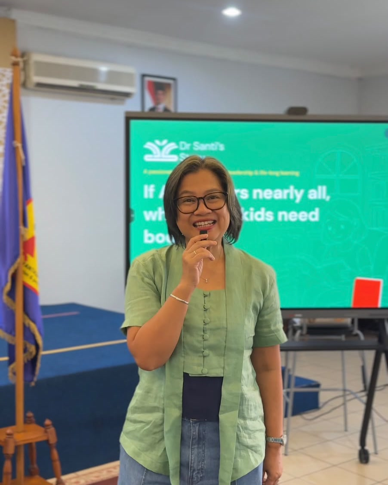

Korporasi
Manajer, profesional, dan pemimpin tim di perusahaan.
Coaching Kepemimpinan Eksklusif Secara Online
Apakah Anda memiliki KPI yang harus dicapai dan tim yang perlu dipimpin? Apakah Anda dituntut memberikan hasil, sementara tuntutan pekerjaan terasa begitu berat?
Coaching personal untuk manajer, profesional, dan pemimpin tim di perusahaan, institusi pendidikan, maupun organisasi komunitas. Pendampingan ini membantu Anda menghadapi tantangan dan berfokus pada tujuan yang ingin dicapai.

Memimpin tim sambil berupaya mencapai KPI berarti memikul tanggung jawab di beberapa sisi sekaligus. Saat tuntutan pekerjaan terasa berat, kita sering kesulitan mengambil jeda untuk melihat kembali cara kita memimpin.
Coaching Kepemimpinan Eksklusif Secara Online memberi Anda ruang pendampingan personal untuk membahas tantangan yang sedang dihadapi dan berfokus pada tujuan yang ingin dicapai.
Mulailah dengan memahami diri sendiri. Memimpin lebih baik untuk mencapai KPI.
Manajer, profesional, dan pemimpin tim di perusahaan.
Manajer, profesional, dan pemimpin tim di bidang pendidikan.
Manajer, profesional, dan pemimpin tim di organisasi komunitas.
Coaching kepemimpinan
Coaching personal membantu Anda menghadapi tantangan dan mencapai tujuan.
Tantangan
Pendampingan
Coaching kepemimpinan
150.000 per sesi
99.000 per sesi
Harga reguler: 750.000 per sesi
Pilih paket coaching yang sesuai dengan kebutuhan Anda.
Reservasi sesiDari kegiatan sebelumnya
Cuplikan pertemuan di Cartea dan Fantasia. Masing-masing hadir dengan audiens, pertanyaan, dan suasana yang berbeda.
Setiap sesi berangkat dari konteks audiens.
Santi Dharmaputra, PhD
Kenali pendekatan Santi dan bahas topik yang ingin dibawa ke sesi di sekolah atau komunitas Anda.
Reservasi sesi
Coaching Kepemimpinan Eksklusif Secara Online
Anda juga dapat menghubungi Dr Santi's Story melalui WhatsApp: +62 877-2066-6619
Tentang Dr. Santi’s Story
Santi Dharmaputra, PhD, adalah pembicara dan pembelajar sepanjang hayat. Melalui Dr. Santi’s Story, ia mengajak kita melihat kembali hal-hal yang sering dianggap biasa: cara kita mendengarkan, membaca, berinteraksi di rumah, dan menjalani kebiasaan sehari-hari. Berbekal lebih dari 20 tahun pengalaman di sektor korporasi dan pendidikan di Belanda, Australia, dan Indonesia, Santi membawa perspektif tentang parenting, budaya literasi, komunikasi orang tua dan anak, serta belajar sepanjang hayat. Setiap sesi disesuaikan dengan tujuan dan kebutuhan audiens.
Mari berdiskusi